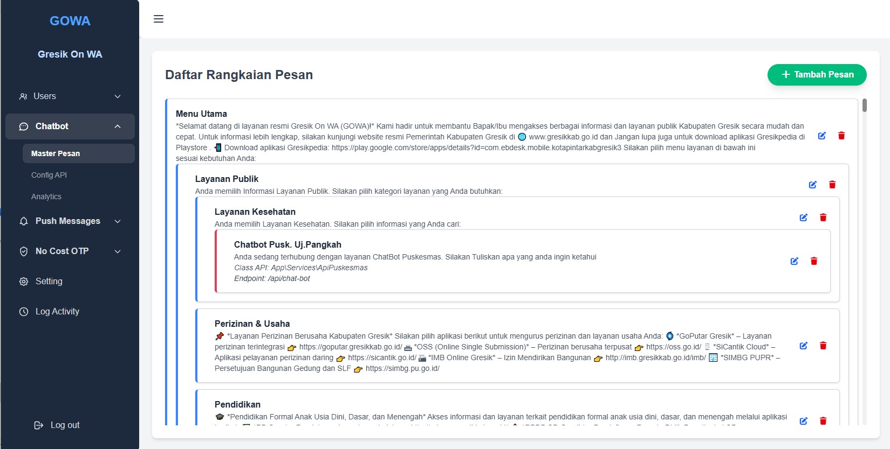
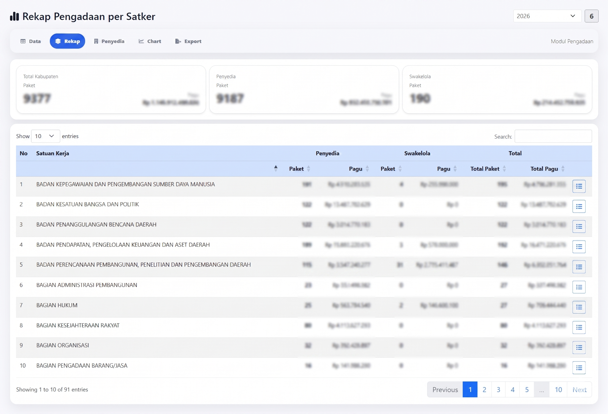
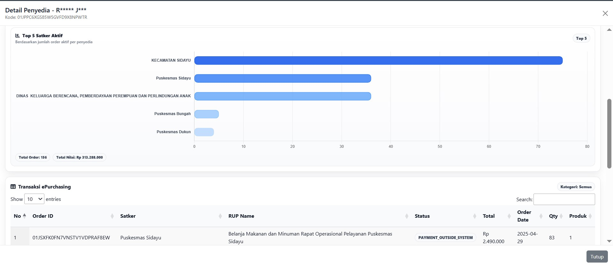
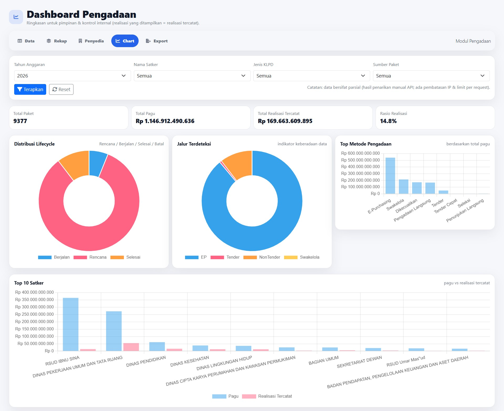
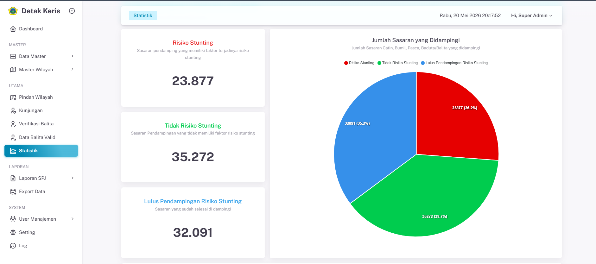
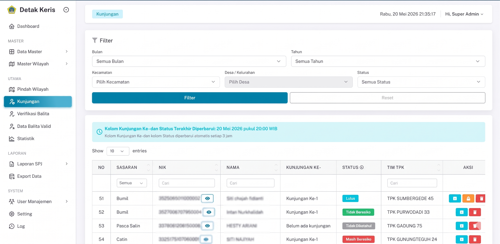
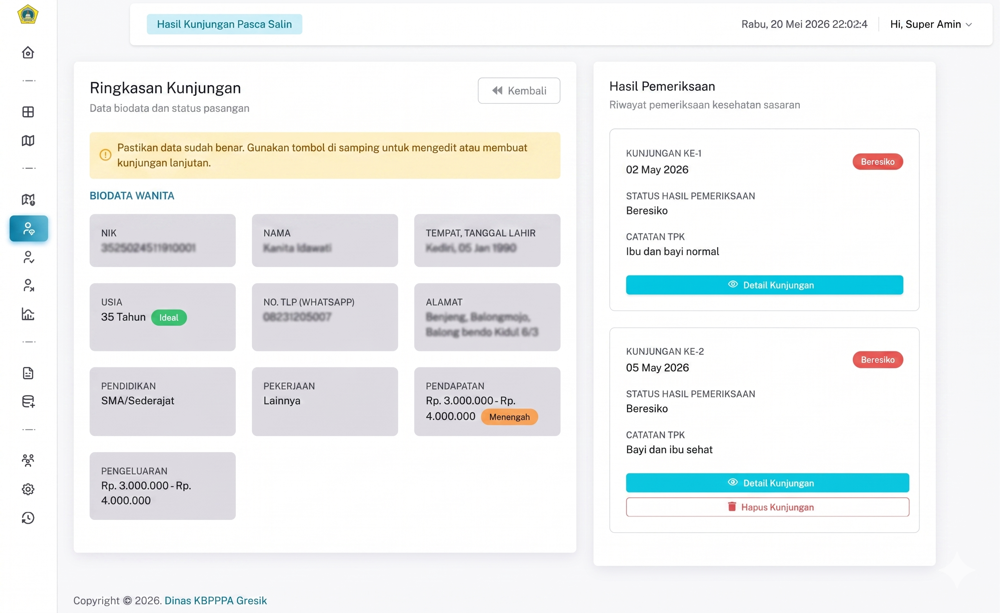
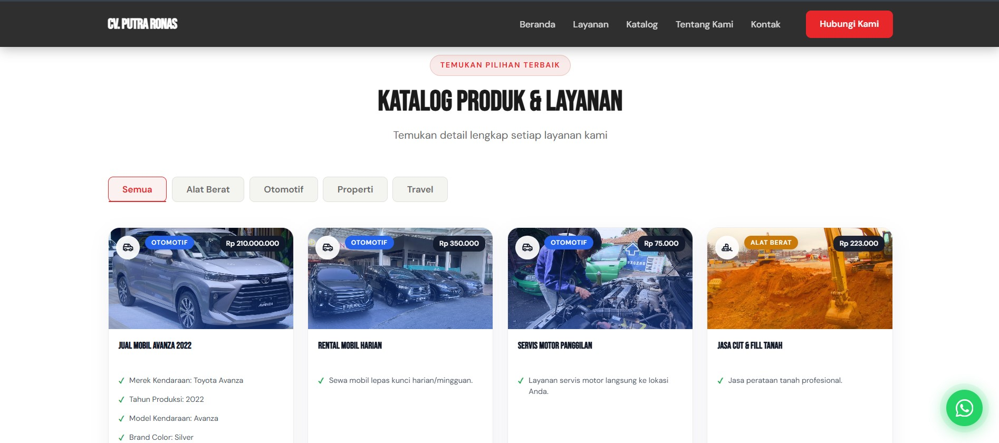
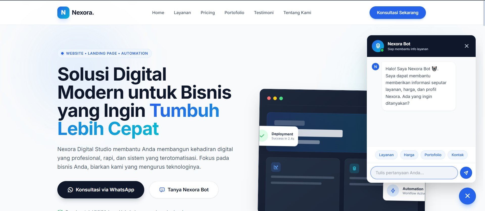
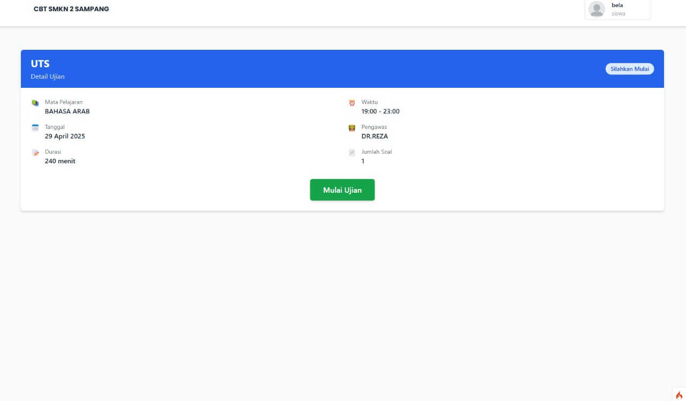

|
Backend Developer
Backend Developer yang fokus membangun aplikasi Laravel, REST API, webhook, WhatsApp Gateway, chatbot flow, dashboard monitoring, cronjob, dan sistem integrasi data untuk kebutuhan production.
01. About Me
Halo! Saya Aris Nur Khoriq, Backend Developer dari Lamongan, Jawa Timur. Saya berpengalaman membangun dan memelihara aplikasi berbasis Laravel, CodeIgniter, REST API, webhook, WhatsApp Gateway, dan MySQL untuk kebutuhan production.
Saya terbiasa menangani integrasi API eksternal, chatbot WhatsApp, dashboard internal, scheduled processing, validasi data, logging, deployment, maintenance, serta troubleshooting sistem legacy dengan struktur data kompleks.
Saat ini saya terbuka untuk remote part-time dan freelance project-based, terutama untuk kebutuhan backend Laravel, API integration, WhatsApp chatbot, dashboard, dan maintenance aplikasi web.
Fokus Pengembangan
- Backend Development
- API Integration
- Webhook Processing
- Dashboard Systems
- WhatsApp Automation
- Legacy Maintenance
- Database Optimization
- Task Scheduling
02. Technical Stack
Backend
Database
Automation
Tools
03. Selected Projects

GOWA — WhatsApp Chatbot Layanan Publik
Platform chatbot WhatsApp layanan publik Diskominfo Gresik yang menghubungkan masyarakat dengan layanan digital melalui alur percakapan berbasis WhatsApp, MaxChat, webhook, dan API eksternal.
- 91 layanan aktif terintegrasi melalui konfigurasi API berbasis JSON
- Integrasi MaxChat sebagai WhatsApp Gateway dan realtime webhook processing
- Dynamic message routing, session expiration 30 menit, analytics menu, dan tracking unique user



Dashboard Internal Monitoring & Analitik Pengadaan
Dashboard monitoring pengadaan untuk kebutuhan internal dan konsumsi pimpinan, dengan integrasi 14 endpoint API, sinkronisasi harian, server-side DataTables, chart, filter, detail table, dan fitur export.
- 30K+ data pengadaan dari RUP, ePurchasing, tender, non-tender, swakelola, dan master penyedia
- Sinkronisasi harian memakai Laravel Scheduler, artisan command, upsert, logging, dan last-success tracking
- Dataset siap dashboard dengan flag jenis pengadaan, indikator realisasi, dan field summary



Detak Keris
Aplikasi production untuk monitoring risiko stunting berbasis data kunjungan pada sasaran catin, PUS, bumil, pasca salin, dan balita, dengan data historikal besar dan struktur legacy yang kompleks.
- Maintenance sistem legacy, debugging proses data, dan pengolahan data terjadwal berbasis shell script serta SQL
- Optimasi query MySQL, penambahan index, standarisasi mapping wilayah, dan database transaction untuk mencegah partial write
Other Projects
Project tambahan yang pernah saya kerjakan, mencakup aplikasi web, dashboard, API, automation, dan sistem internal.



Prototype Sistem CBT
Prototype aplikasi Computer-Based Test dengan fitur auto-scoring, manajemen soal, timer ujian, dan laporan hasil berbasis web.
Experience
Pranata Komputer Ahli Pertama
Membangun dan memelihara aplikasi backend, integrasi sistem, chatbot WhatsApp GOWA, dashboard monitoring, cronjob, API integration, dan maintenance aplikasi production.
IT Programmer
Membangun aplikasi mobile Flutter dari nol, membuat 10+ REST API endpoint, integrasi Firebase Cloud Messaging, dan support release ke Google Play Store.
Sarjana Teknik Informatika
Latar belakang pendidikan Teknik Informatika dengan pengembangan project web, backend, database, dan sistem informasi.
Certifications
Junior Web Developer
Vocational School Graduate Academy
Fundamental Data Science
DQLab
Front-End & Back-End Development
Digital Talent Scholarship
Assistant Web Developer
Digital Talent Scholarship
Belajar Dasar Pemrograman JavaScript
Dicoding
What's Next?
Let's Build Something Together
Saya terbuka untuk remote part-time dan freelance project-based, terutama untuk backend Laravel, API integration, WhatsApp chatbot, dashboard, dan maintenance aplikasi web.
Hubungi Saya